住みたい街、行ってみたいレジャースポットとして人気があります
海辺にはおしゃれなカフェやレストランが点在し美味しい物を求めて糸島へ
また窯元・家具などの工房＆クラフトギャラリーを持つ作家が多く
この世にひとつしかない作品の数々を見たり買ったりするこができます
海岸で海水浴・サーフィンを楽しむ人々、魚釣りを楽しむ人
ドライブで自然に恵まれた景勝地を巡ったり
アウトドア・ゴルフ・登山・散策・大自然を最大に満喫できる
レジャースポット満載で何度来ても楽しめます
糸島
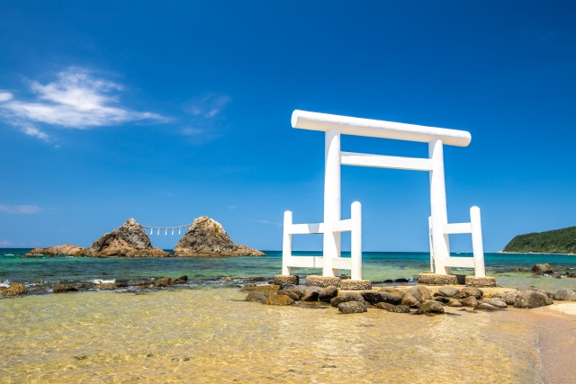
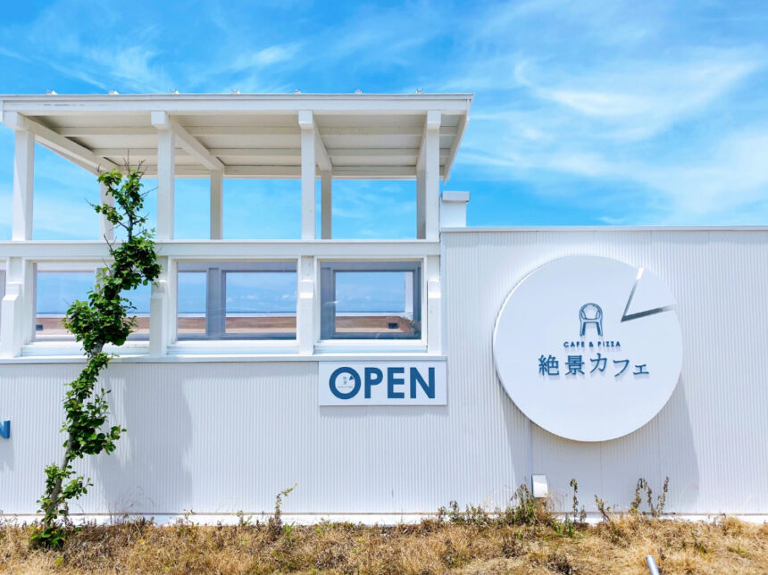
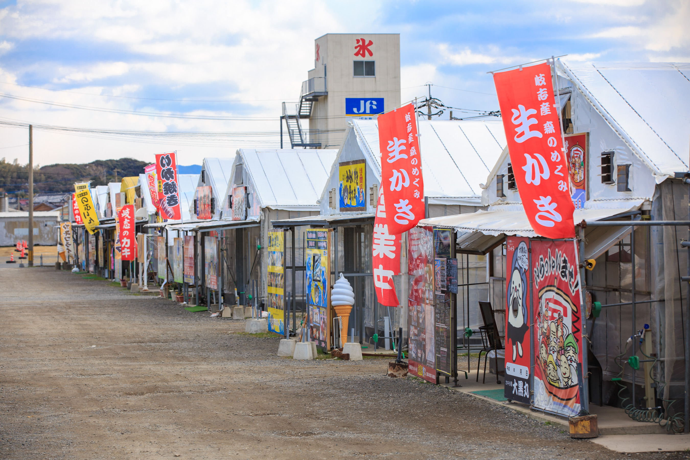
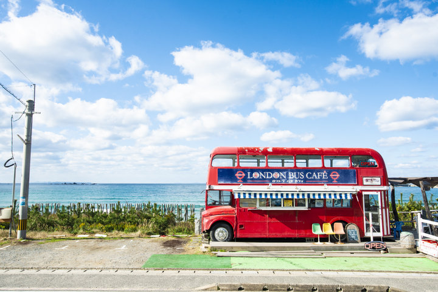
『糸島ブランド』で知られる食材は、農産物・海産物・豚肉だけでなく、ハム・ウインナーの加工品
伝統ある古くから伝承された手法にこだわった醤油・酒造・塩等、なんでも揃い糸島は食の宝庫で新鮮美味の食材があふれています
生産者が出荷するシステムを持つ産直・特産品販売所で新鮮な糸島食材を買っていくこともできますし
糸島の食材をふんだんに使ったカフェ・レストラン・お食事処で、季節の味を楽しむこともできます
特に冬になると漁港ごとに30軒近くのカキ小屋がオープンし、海から上がったばかりのカキを
自分の手で焼いて食べる美味しさは格別で、たくさんの人で賑わいます
柳川川下り
川下りが現在のように柳川の観光として定着するようになったのは
昭和30年ごろ約400年前の江戸時代に柳川城を築城するために
整備された堀割は当初は生活用水や水上道路として利用され
明治以降はどんこ舟を使った川遊びがさかんに行われるようになりました
川下りが始まったきっかけは昭和29年に公開された映画『からたちの花』
柳川出身の詩人北原白秋の少年時代を描いた長谷健の小説が原作の作品で
柳川で撮影が行われた映画に登場した川遊びが注目を浴びたことを機に
柳川市は2艘のどんこ舟で観光客向けに川下りを始めました

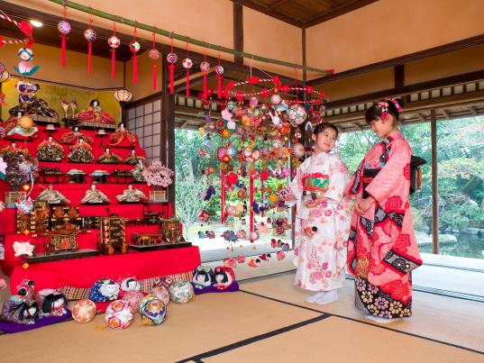
 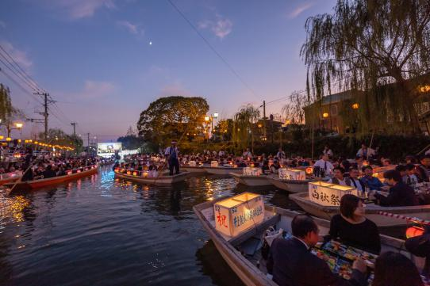
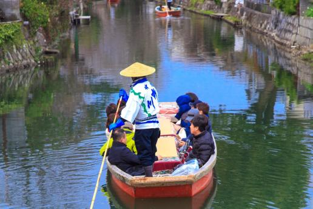
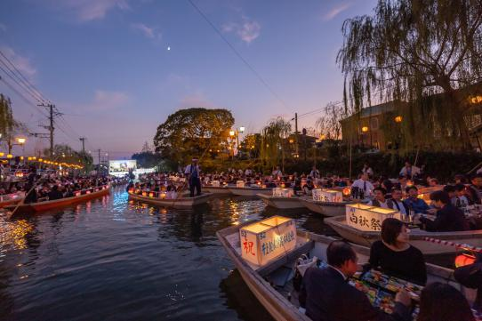
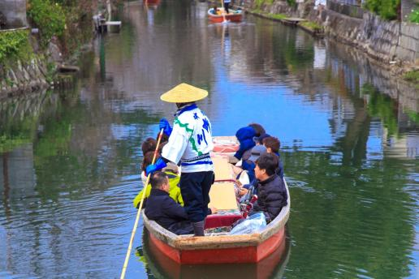
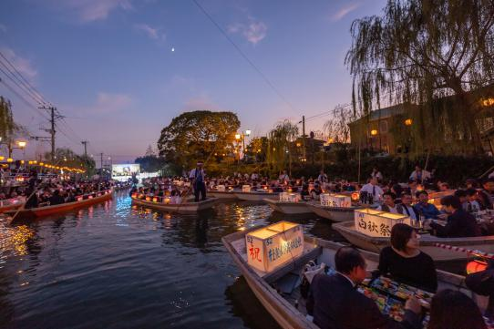
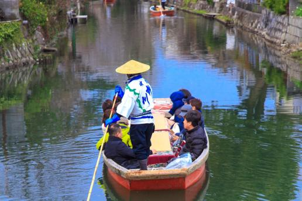
「1年中楽しめる柳川川下り」春の風物詩「柳川雛祭り さげもんめぐり」水上に飾られたさげもんの中を
お内裏様やお雛様と稚児衣装の女の子たちがどんこ舟に乗って進む「おひな様水上パレード」も行われます
夏の夜に運航される「灯り舟」「灯り舟」の為にライトアップされた約4kmのお堀は
昼間とはまた違う落ち着いた雰囲気が感じられます
北原白秋を偲ぶ「白秋祭水上パレード」ほおずき提灯で飾られた舟が1日約70艘お堀を下ります
冬期限定の「こたつ舟」どんこ舟に火鉢をいれたこたつを乗せ、ぽかぽか温まりながら進みます
こたつで甘酒などを味わいながらの舟遊びは、この時期だけの特別な体験です
門司港レトロ
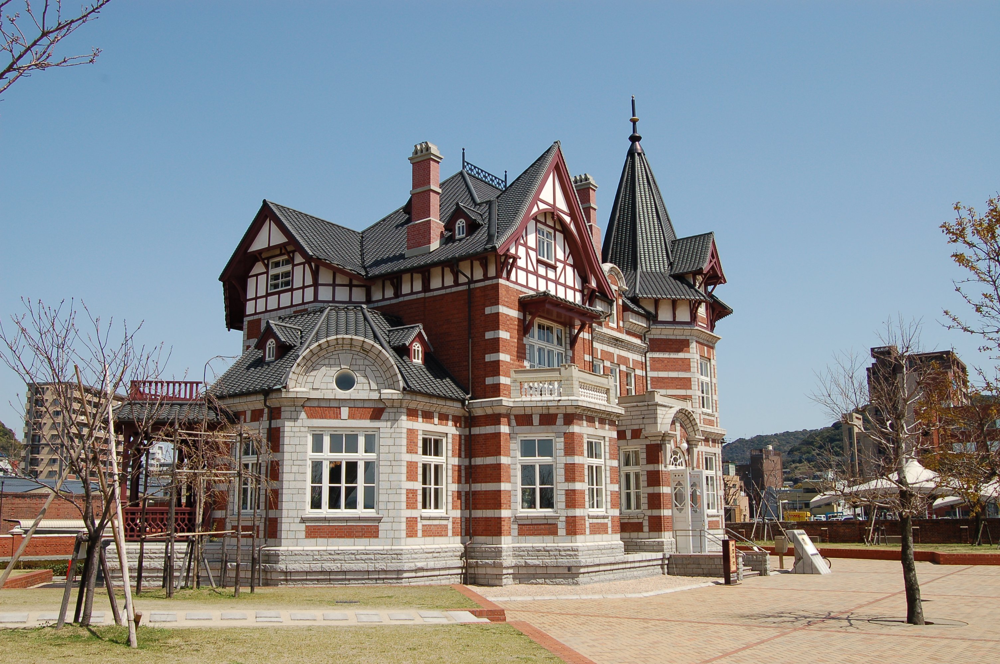
明治から昭和にかけて国際貿易の拠点として発展し、横浜・神戸と並んで
「日本三大港」のひとつにも数えられた門司港。当時建てられたレンガ造りの
建物などが今なお残り、レトロな雰囲気が漂う一帯は「門司港レトロ」として
人気の観光地になっています
焼きカレーやふぐ料理のお店、ミュージアム、関門海峡を見渡せるスポット
土産もの屋など見どころ多数。夜のロマンチックな光景はデートにもぴったり
門司港駅の周辺に見どころが集中しているのでブラブラ歩いて回れるのも
おすすめのポイント
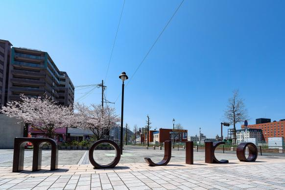
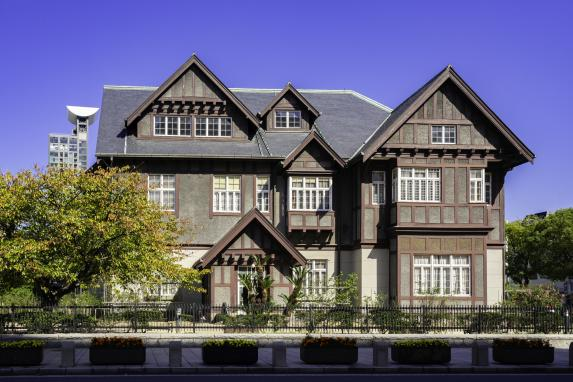
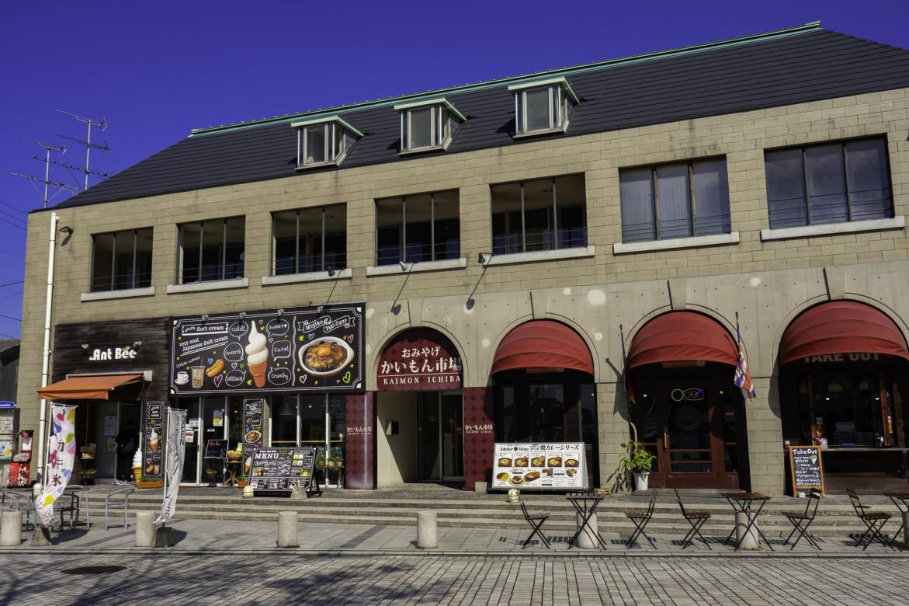
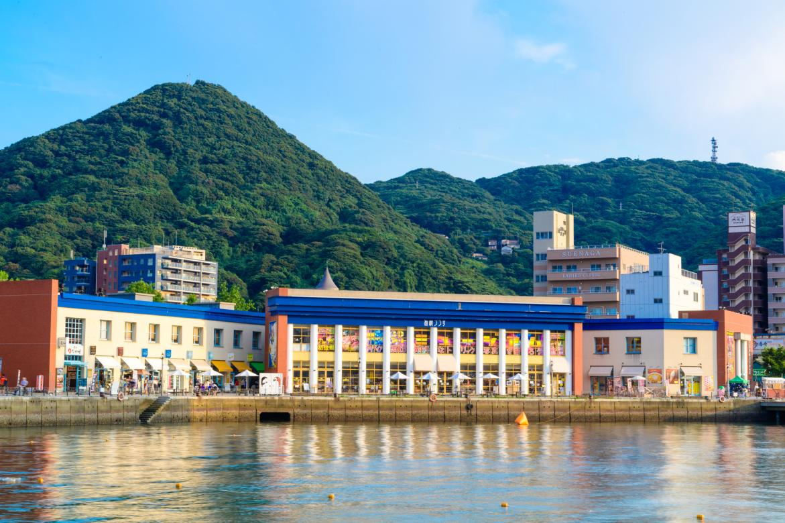
『門司港の街には重厚感ある歴史的建造物が美しく保存されています。建物の中も見学でき見ごたえ十分
ノスタルジックな雰囲気とゆっくりと流れるような優雅な時間を体感できます
「海峡プラザ」は海に面した解放感ある施設で雑貨やお土産屋さん眺望抜群のレストランやカフェなどが並び
ショッピングからお食事まで一気に楽しむことができる充実の施設です
門司港レトロ散策には、レンタサイクルもおすすめです！
海風を感じながらのサイクリングはまた歩いて回る散策とは違った楽しみが見つかりそう
海の中道
海の中道は福岡県福岡市東区にある志賀島と九州本土とを繋ぐ陸繋砂州で
福岡市内のリゾート地域として多くの施設を抱えています
砂州の中央部から西北部にかけては公園やレクリエーション地区で
その一番東には福岡市雁の巣レクリエーションセンター
西には海の中道海浜公園やマリンワールド
西戸崎シーサイドカントリークラブ、クレイン福岡などがあります
マリンスポーツなどアクティビティ、バーベキュー場、温浴施設などが
併設され大人から子供まで楽しむこともできます
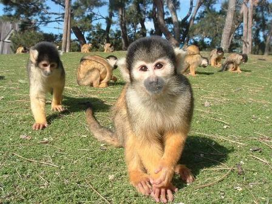
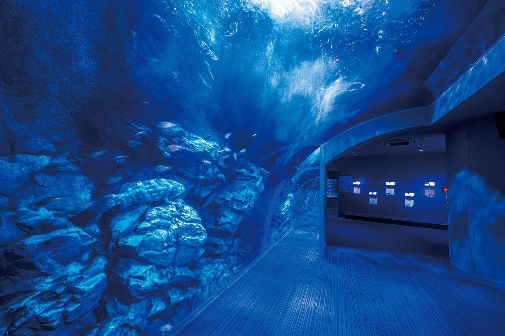
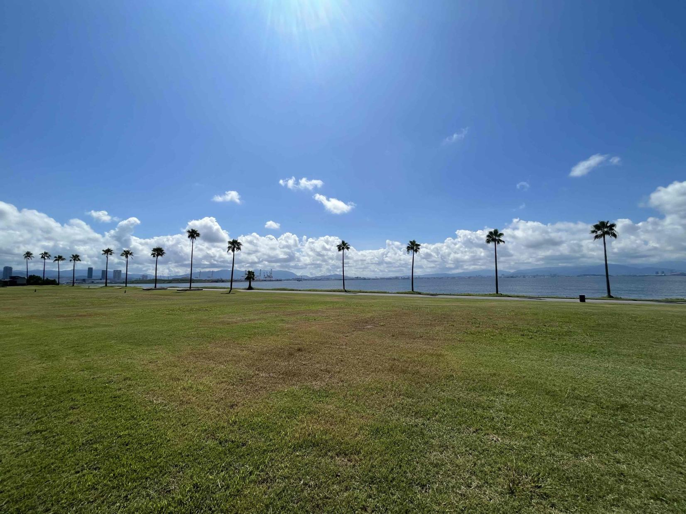
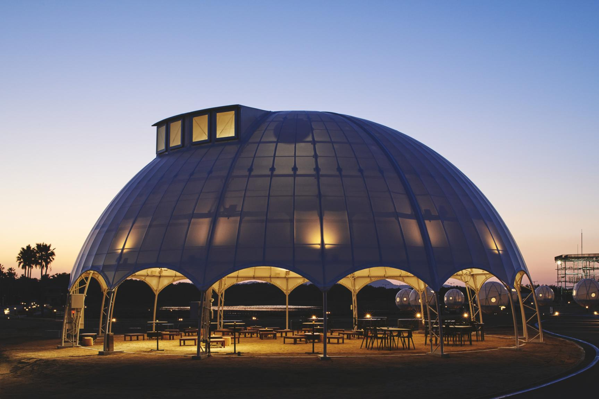
「海の中道」にある広大な国営公園。園内では四季折々の花とリスザルやカピバラなどかわいい動物たちとの
触れ合いを楽しむことができます。ゴーカートやミニSLなどの遊具に、サイクリングやバーベキュー、夏には
「海の中道サンシャインプール」など、家族で楽しめるアクティビティがいっぱい
「マリンワールド海の中道」は350種30000点の生き物を展示しています。博多湾をバックにアシカイルカショーや
大水槽でのダイバーのショーまたペンギンを間近に観察できるペンギンの丘やアザラシにえさやり体験などが人気です